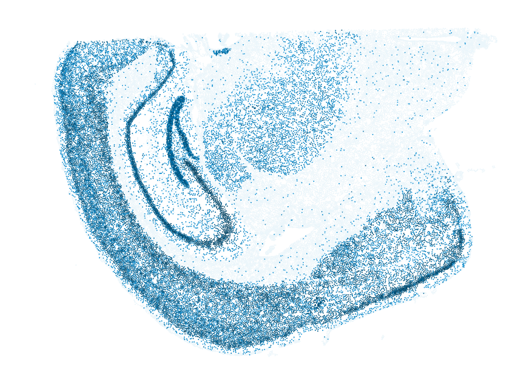
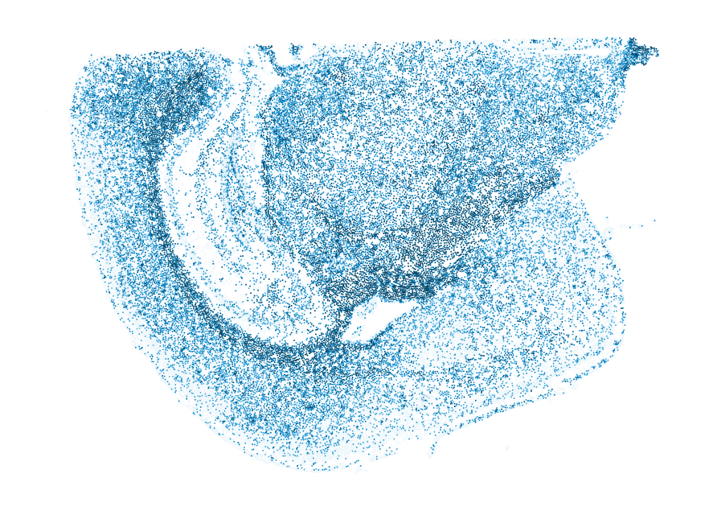
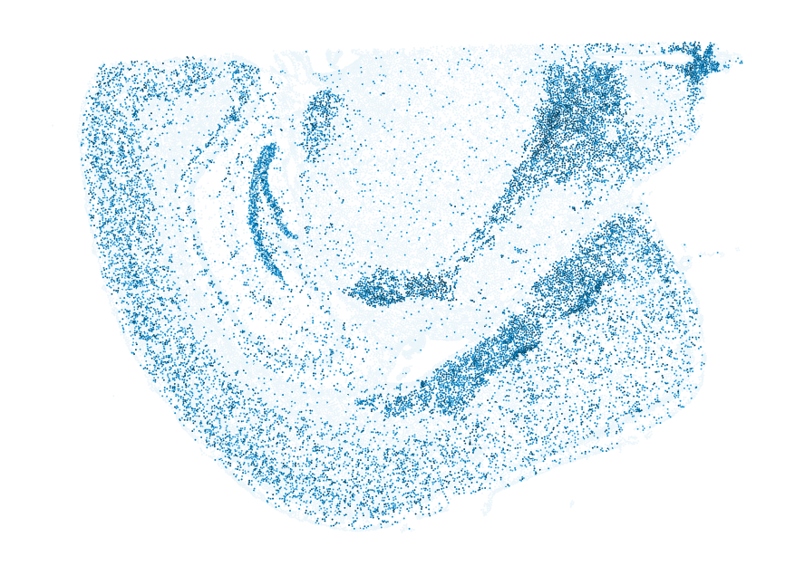
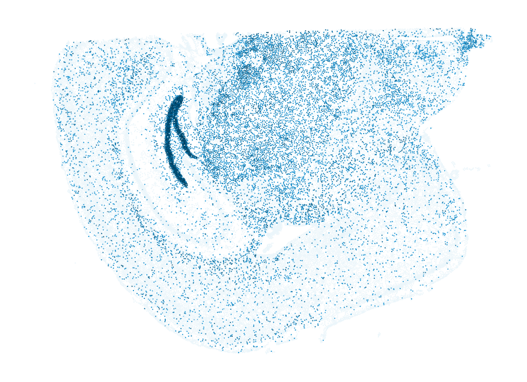

Marker genes
Marker genes turn cluster numbers into cell types
Data
QC
Filter
Normalize
Cluster
Markers

Slc17a7 · excitatory neurons · clusters 0, 6

Plp1 · oligodendrocytes · clusters 3, 11

Gad1 · inhibitory neurons · cluster 8

Prox1 · dentate gyrus granule cells · cluster 21
How a marker is found
For each gene: rank all cells by expression. Do the cells of this cluster rank higher than all other cells? (Wilcoxon rank-sum test)
toy: 10 cells sorted by expression; orange = in the cluster
Check each marker on the map: a real cell type marker should light up where that cell type lives. Name clusters by markers, not by number.
Several clusters share a top marker (Plp1: clusters 3 and 11; Slc17a7: 0 and 6). Look beyond the top gene.
Top Wilcoxon marker per Leiden cluster, library-size normalized Practical 2 data.